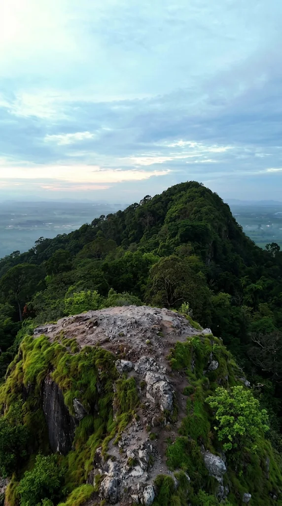
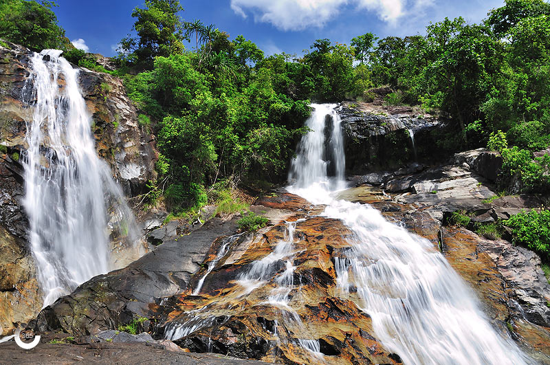

Khuha Mountain
Khao Le Sadao

Ton Nga Chang Waterfall

| สถานที่ | ชมแสงแรก ทะเลหมอกยามเช้า หรือชมวิวช่วงเย็นได้แบบพาโนรามา | |
| ที่ตั้ง | คูหาใต้ อำเภอรัตภูมิ สงขลา 90180 | |
| แมพ | เขาคูหา | |
| ระยะทาง | เดินเท้าขึ้นสู่จุดชมวิวประมาณ 15-30 นาที | |
| ข้อควรรู้ | สามารถเดินขึ้นไปเอง มีห้องน้ำตรงจุดจอดรถ และพกน้ำดื่่มติดตัว |
| สถานที่ | ชมแสงแรกทะเลหมอกยามเช้า 360 องศา แหล่งท่องเที่ยวเชิงพุทธอุทยานและจุดชมวิวธรรมชาติ | |
| ที่ตั้ง | ตำบล สะเดา อำเภอสะเดา สงขลา 90120 | |
| แมพ | เขาเล่ | |
| ระยะทาง | เดินเท้าขึ้นสู่ยอดเขาประมาณ 15 - 30 นาที | |
| ข้อควรรู้ | สามารถเดินขึ้นไปเองหรือไปกับทีมงานเทศบาลบาลเมืองสะเดา พกน้ำดื่่มติดตัว ทางเดินมีความชันและลื่น มีการใช้เชือกช่วยปีน |
| สถานที่ | พื้นที่อนุรักษ์ที่ดูแลเส้นทางเดินป่า จุดชมวิว และพื้นที่พักผ่อนตามธรรมชาติ มีน้ำตกโตนงาช้าง 7 ชั้น |
|
| ที่ตั้ง | ตำบลทุ่งตำเสา อำเภอหาดใหญ่ จังหวัดสงขลา | |
| แมพ | เขตรักษาพันธุ์สัตว์ป่า โตนงาช้าง สงขลา | |
| ระยะทาง | ระยะเดินเท้าเข้าสู่โซนน้ำตกเริ่มต้นราว 80 เมตร สามารถเดินต่อยังชั้นถัดไปตามป้ายบอกทาง โดยมี 7 ชั้นและระดับความท้าทายของเส้นทางเดินป่าที่แตกต่างกัน |
|
| ข้อควรรู้ | เปิดให้บริการทุกวัน เวลา 09:00-16:00 น. มีห้องน้ำสาธารณะ ห้องละหมาด ที่จอดรถที่รองรับผู้ใช้วีลแชร์ ลานปิกนิก |